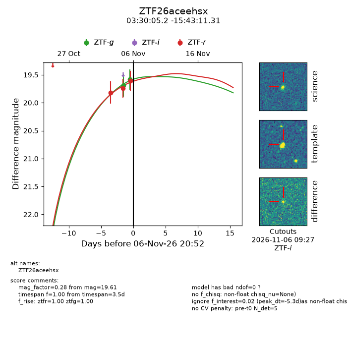
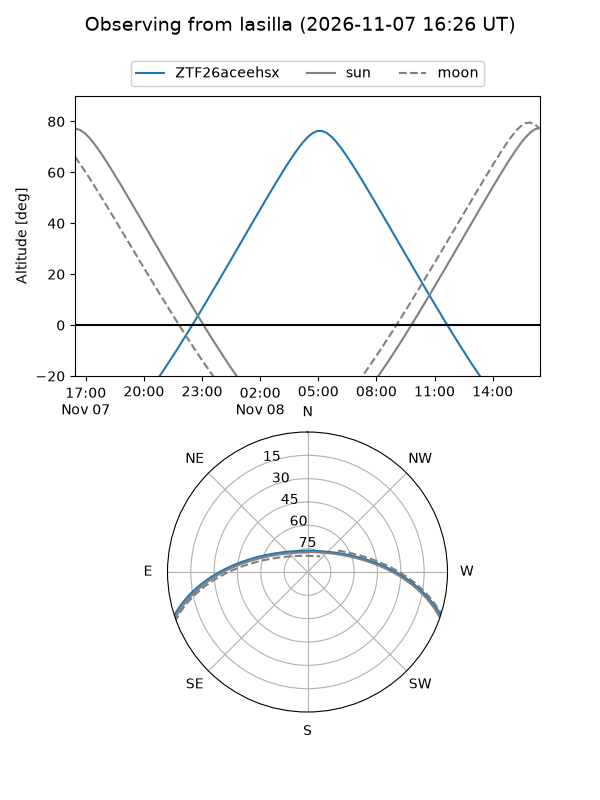
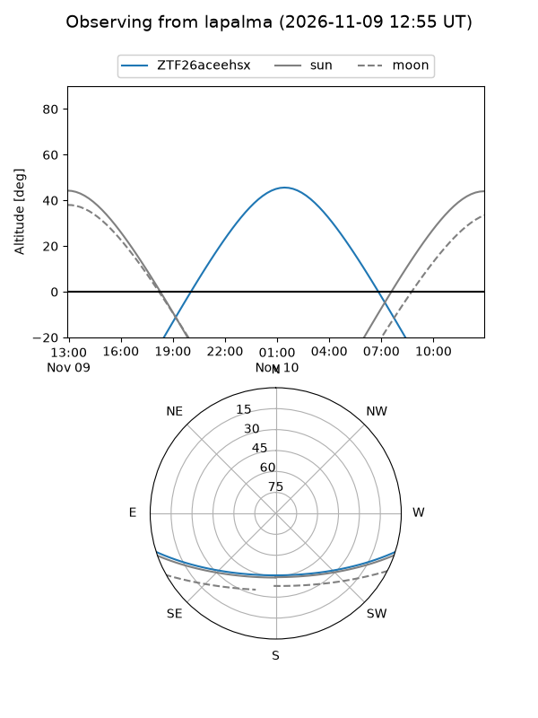
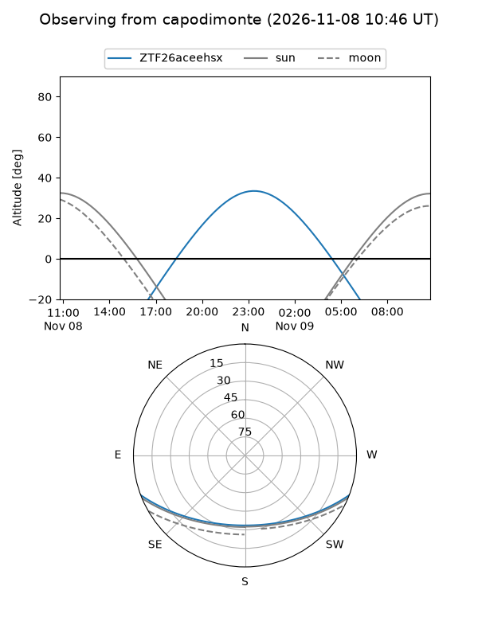
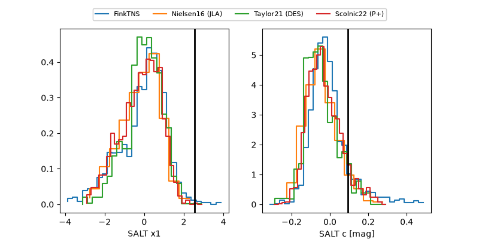

ZTF26aceehsx
Target ZTF26aceehsx at 2026-11-06 20:54
Aliases and brokers:
FINK-ZTF: ztf.fink-portal.org/ZTF26aceehsx
Lasair-ZTF: lasair-ztf.lsst.ac.uk/objects/ZTF26aceehsx
ALeRCE-ZTF: alerce.online/object/ZTF26aceehsx
Direct TNS query: direct search
alt names
ZTF26aceehsx (ztf,fink_ztf)
Coordinates:
equatorial (ra, dec) = 52.5215,-15.71981
equatorial (HMS+DMS) = 03:30:05.17,-15:43:11.31
galactic (l, b) = (203.9810,-51.54055)
Flags:
peak dt: -5.3
Photometry:
last ztfg=19.58, ztfr=19.61
2 ztfg, 3 ztfr detections
Lightcurve

Visibility



Additional plots
